尖不辣海灘是關丹最著名的海灘，距離關丹市鎮大約4公里。 這片海灘的左右兩端由巨大的岩石坐鎮，海灘前有一條漫步走道，直引向一座建築物BALAI KARYANEKA，一座售賣紀念物品的商店、餐館及美食檔口等。 這片海灘是市民們傍晚時分相聚、閒話家常、鬆懈身心的絕佳場所。 靠近海角處的一座公園，提供散步及休閒活動等設施。海灘上有一條小徑，穿過直落尖不辣森林保護區，到達更加隱祕的PELINDUNG海灘。
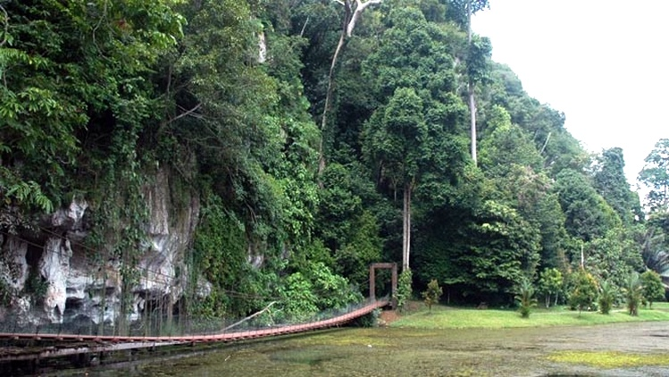
洞穴位於淡馬魯TEMERLUH縣內，這些洞穴北認為具有超過3億年的歷史。整個洞穴範圍內，擁有超過30個洞穴。一些洞穴的頂端還有汙水坑。 最引人注目的是SEVEN SELLS CAVE，洞穴的岩石形狀像是七座瀑布的化石。在GUNUNG SENYUM還可看到許多猴子及山羊。
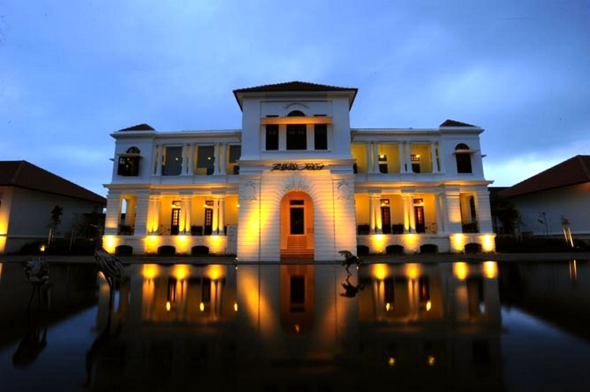
北根是一座寧靜、安詳的皇城，這裡最顯眼的建築就是皇宮及收藏豐富歷史文物的州博物館。其中一些文物，還是自沉沒在附近海域的古代中國船隻打撈上來的。 在北根附近的PU-LAU KELADI村，有一家彭亨絲綢編織中心，值得一遊。
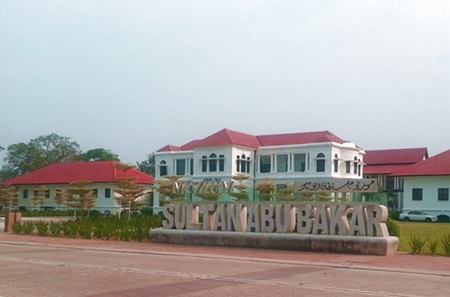
彭亨州博物館座落在北根，這裡展示了彭亨州皇室家族的資料和文物、有關彭亨開採錫礦的歷史資料、中國陶瓷及玻璃器具等。皇室家族的資料皆非常完整的收藏在這裡。
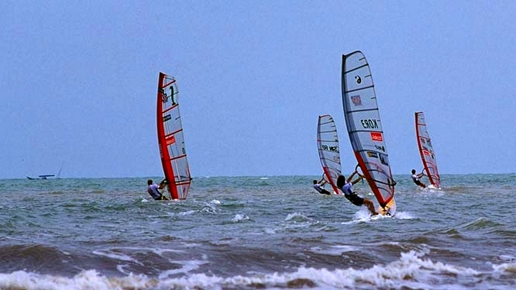 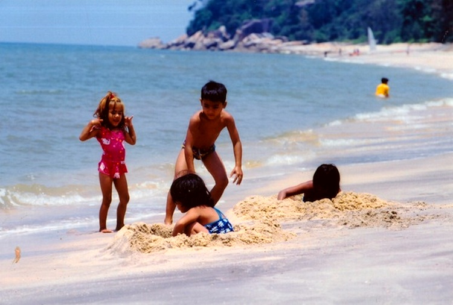
巴落漁村位於關丹以北大約15公里處，這裡有一條非常漂亮的海灘，是從事及喜愛海灘運動者，最喜歡到來的一個地方。沿著漂亮的沙灘上，建了好多家酒店。
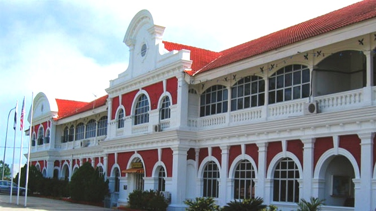 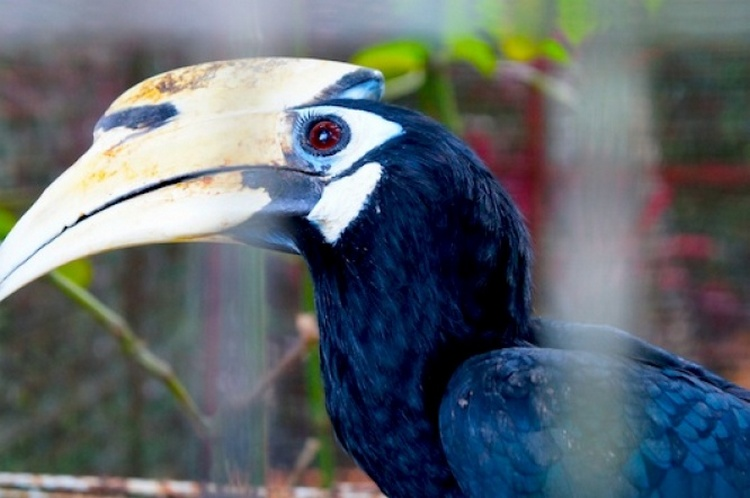 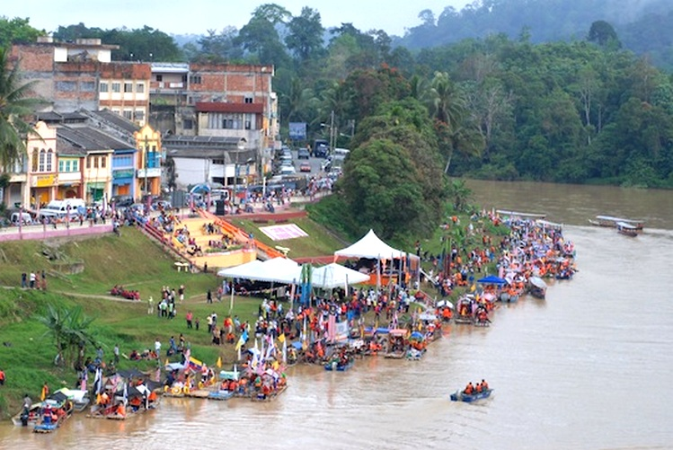
瓜拉立卑值得一遊的地方包括:法庭大廈、EMPANG JALEH休閒湖及野鳥聚集的BUKIT TACHING山。瓜拉立卑附近有一座GUNUNG MERAPOH山，有好幾條小徑可以直通到山頂。 攀爬這座山需要2至3天的時間。在勞勿RAUB縣的JERAM BESU RAPIDS，距離吉隆坡大約90公哩，是一個非常具挑戰性的划筏木舟的地方。
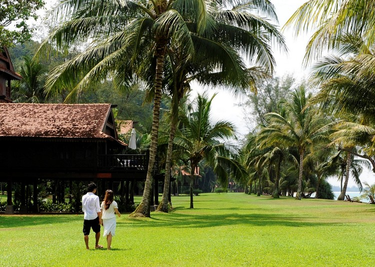 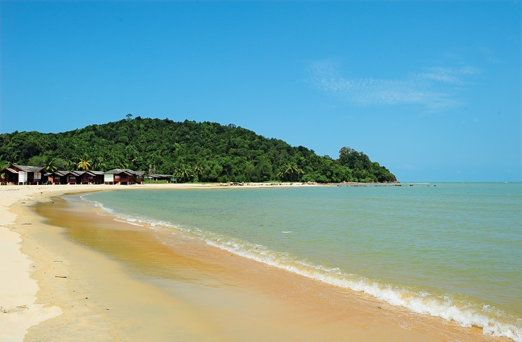
珍拉丁是亞洲最早設立的“地中海俱樂部”CLUB MEDITERRANEAN。它位於關丹以北47公里的地方。 珍拉丁是一個非常著名的旅遊景點，這裡常年都會舉辦許多活動，其中包括：文化表演以及各種各樣的水上運動。珍拉丁的海域很適合玩帆船、滑浪等。 此處村民對於編織帽子及籃子等，皆非常熟練。除了地中海俱樂部，珍拉丁也有許多有著漂亮海灘的飯店，提供旅客另一選擇。
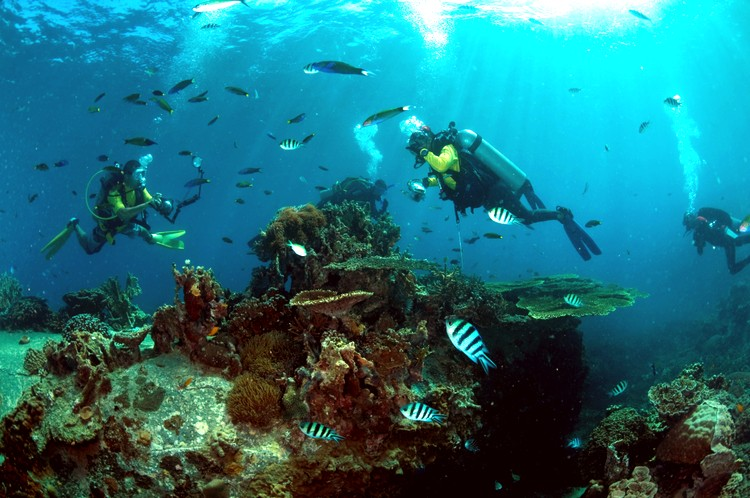 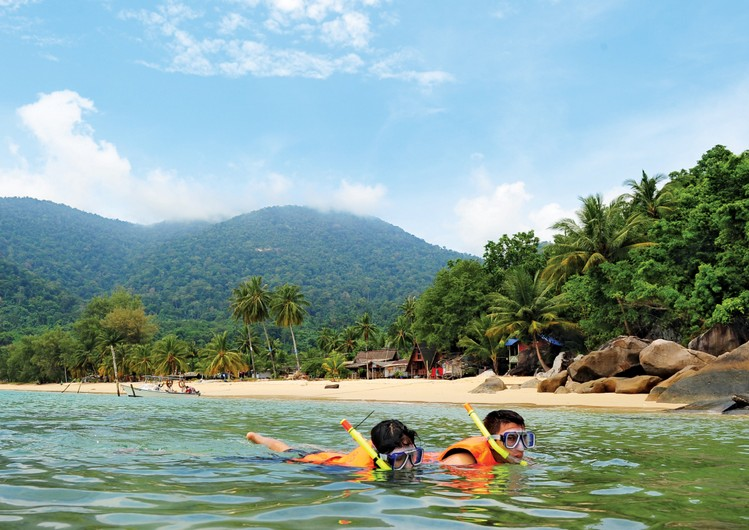 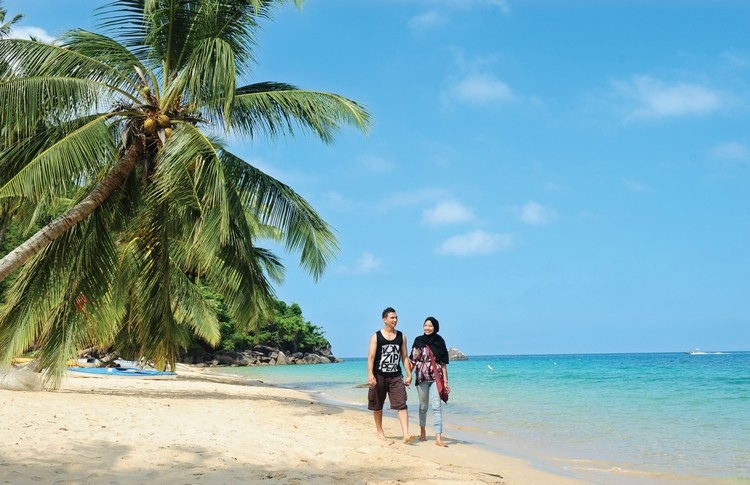 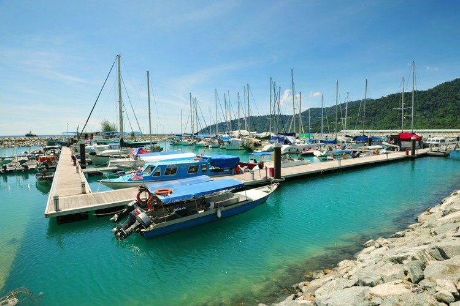
聞名遐邇的刁曼島是東海岸離島中最大的一座島，但是島上的人口卻不多。這座島向來是來往航行的船隻，停靠上岸換取新鮮食用水及其他物資的重要地方。 刁曼島的美，盡在其壯觀的瀑布、濃密的森林區及清澈透明擁有大量魚群和珊瑚礁的迷人海域上。 刁曼島的北部和南部皆有不錯的發展，到處建有可愛的鄉村小屋。在離機場不遠的地方，有一座“成功刁曼渡假村”BERJAYA TIOMAN RESORT。其中比較著名的海灘，座落在SALANG村、TEKEK村及GENTING村。 位於刁曼島東邊的JUARA海灘，是比較少人到來的隱秘地點，一般背著行囊的旅客喜歡選擇在此落腳，主要的原因是這裡的住宿比較便宜。 另一個選擇則是刁曼島的北部海灘，短程跋涉跨過一座小山丘，就可以抵達AYER BATNG，這裡以珊瑚礁、廉宜的住宿及餐館而為人稱道。 其他地方則包括：TELUK NIPAH及NUKUT，不過，這兩處地方必須藉助船隻，才有辦法抵達。MUKUT曾經是電影“SOUTH PACIFIC”的拍攝現場。 從彭亨的雲冰出發前往刁曼島，乘坐漁船需要4小時航程，乘坐快艇則只需2小時。遊客也可以從柔佛州的豐盛港啟程前往刁曼島。 從關丹、吉隆坡及新加坡，皆有提供每天前往刁曼島的班機服務。此外，新加坡還有提供前往刁曼島的郵輪及雙體船。
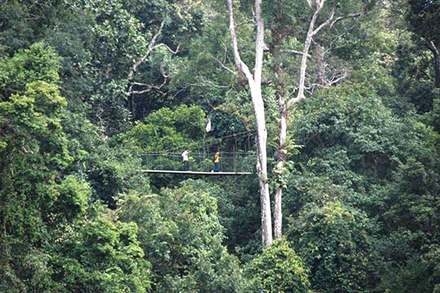 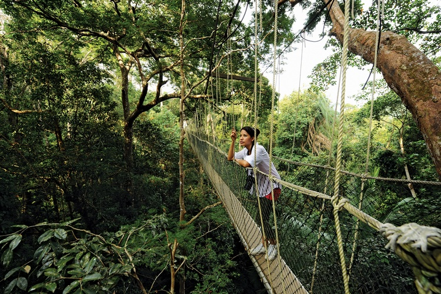 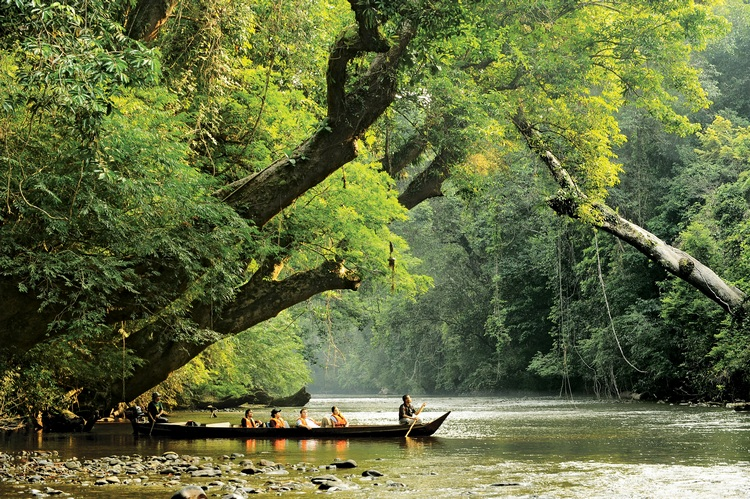
彭亨國家公園佔地4千3百平方公里，它是生態旅遊的天堂。這座擁有1億3千萬年歷史的園地，是數不盡的鳥類、蝴蝶、昆蟲、魚類及其他動植物的庇護所。 此地森林濃密，非常不容易抵達，也因為如此，相對的它亦少受到破壞及汙染。此公園可謂古樹蒼天，擁有獨特的動植物品種、壯觀的洞穴、瀑布及山峰等。 森林區內有許多小徑，可以通達主要的觀察地點，遊客可以在此觀察到種類繁多的野生動植物。在國家公園總辦公室附近就設有觀察野生動物的隱匿處，夜間進行觀察活動會有更好的效果。 不過，如果能夠更深入內區，則可以觀察到更多的野生動植物。其他活動包括：釣魚、在清澈透明的水池中游泳或拍攝狂奔的急流等。 位於國家公園總辦公室旁的國家公園渡假村，擁有渡假屋、宿舍、露營地點、一家咖啡廳及一家餐室。每年，國家公園皆會主辦一場大型的“國家公園歡樂七月節”，透過遊戲、小型展覽及文化表演等，使整座渡假村頓時歡騰起來。 從渡假村往上游行走大約3公哩，即可抵達NUSACAMP露營區，這裡備有住宿設施及營地。國家公園內亦有原住民村落，遊客可以觀察他們的生活方式。
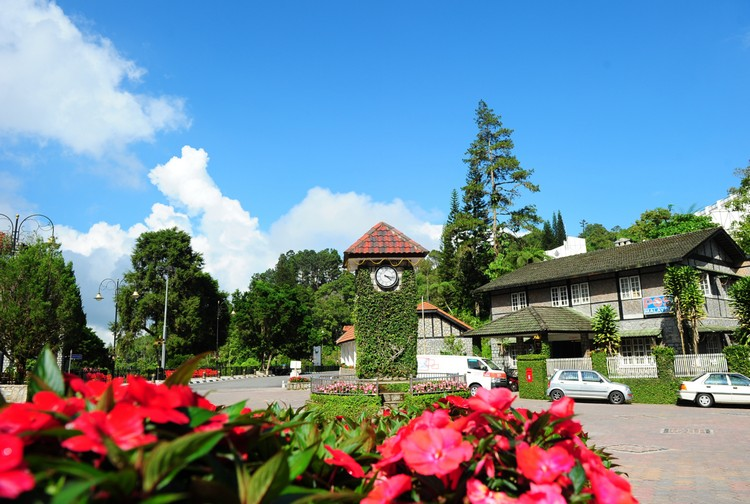

隆港是一座海拔1524公尺的山上避暑勝地。此地是舊殖民地時代的傳奇，遊客仿如來到英國鄉區的感覺。其周圍環境風景幽美、空氣清新、氣候涼爽，是鬆懈身心的好地方。 福隆港是以英國探險家LOUIS JAMES FRASER而命名的。這位FRASER先生於19世紀末，在山上建立一間房屋，並且經營運送錫礦的拖行火車服務。 在19世紀及20世紀之交，他突然消失無蹤，不知去向。這座寒冷的避暑勝地擁有一座9洞的高爾夫球場、一座瀑布、花圃、草莓園及蔬菜園等。 福隆港山上的設備包括：可供住宿的古老迷人建築物及別墅、騎馬俱樂部、兒童玩樂場、小型動物園及一座湖等。 福隆港擁有許多森林小徑，遊客可以盡情瀏覽山區景色及觀看該區的動植物。此地亦是著名的賞鳥區，至少有超過260種類的鳥類被發現在此出沒，其中包括非常罕見的品種。 從吉隆坡開車前往新古毛KUALA KUBU BAHRU，大約需要一小時，再由此上山到達一個控制站，此站控制上山及下山車輛的順序。再行駛8公哩，沿途經過迷人的山區景色，即可抵達福隆港。
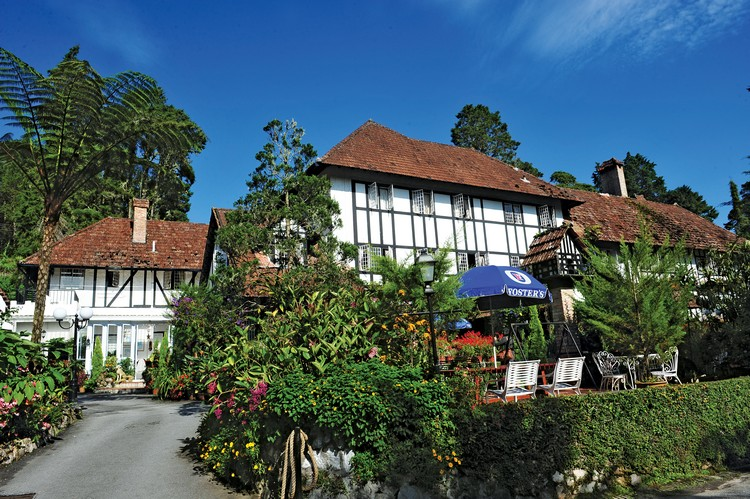 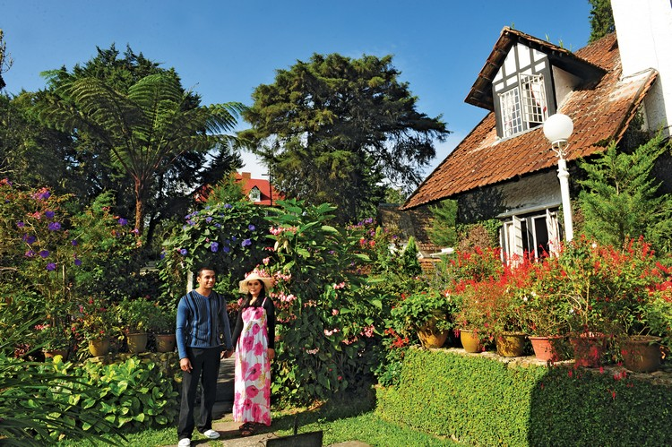
海拔1820公尺的金馬崙高原，可以從霹靂州的打巴啟程前往。這座高原是由一位測量員WILLIAM CAMERON，於1885年所發現。他形容此處是“一座擁有漂亮山坡的完美高原，受崇高壯觀的大山所圍繞”。 這座高原受一層層的山脈及山谷所覆蓋，風景如詩如畫，美不勝收。剛開始這裡吸引了茶葉及林地種植者， 因為他們需要比較寒冷的氣候種植作物。接著，許多華裔菜農跟著看上這塊地方，最後一項一項的經濟發展源源不絕而來。 金馬崙高原分為三個主區域。距離打巴45公里處的冷力RINGLET，是主要的水果、蔬菜農業耕作地。 第二個地區是丹那拉打TANAH RATA，此處是主要的居住城鎮，到處渡假屋、住宅屋、別墅及餐館林立。 距離丹那拉打3公里處是不蘭樟BRINCHANG，這裡有一家國際級的氣派飯店以及一座18洞的高爾夫球場。 不蘭樟還擁有花圃、蔬菜園、果園及茶葉種植區等。 主要的參觀景點包括：草莓園、梯田式的果園、蔬菜園、茶園及玻瑰花圃等。 這是一個購買廉宜的新鮮蔬菜及水果的好地方。高原上有許多小徑，遊客可以隨意漫步參觀。欲爬山探險並非不可，只是在這座蒼茫的森林區中，恐怕會有迷路的危險，遊客得多加小心。
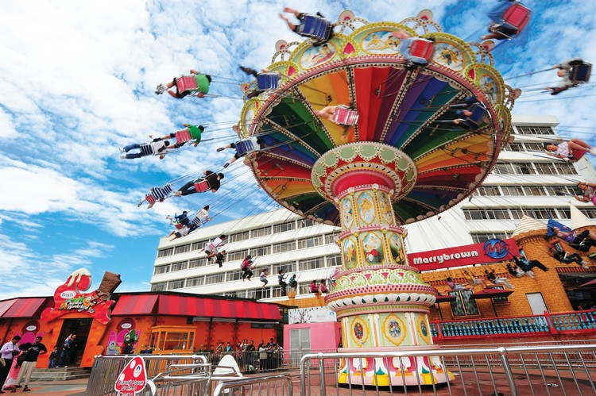 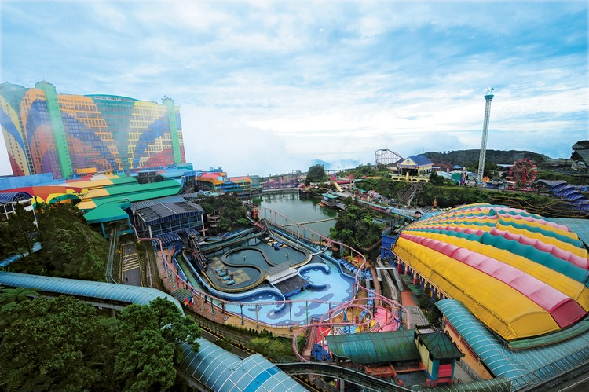
雲頂高原是馬來西亞的空中娛樂城，座落在主要山脈的GUNUNG ULU KALI山上。此座高原海拔兩千公尺，是一個現代化的渡假勝地。 其最吸引人的地方是集飯店、表演廳及迪斯可酒廊於一體的賭場大廈CASINO COMPLEX。 在高原的山丘上，備有戶內及戶外的主題公園，提供雲霄飛車﹙過山車﹚等遊樂活動，讓全家人一同遊玩，其樂融融。此處亦有一座室內體育館，提供籃球場、乒乓﹙桌球﹚球場、羽毛球場及壁球場等設施。 另外，這裡還有32條球道的保齡球館及一座室內游泳池。戶外則有蘑菇培植園、18洞的高爾夫球場及騎馬俱樂部。 雲頂高原上的住宿有公寓; 別墅及酒店供旅客選擇。雲頂高原距離吉隆坡大約51公哩，車程約需一小時。
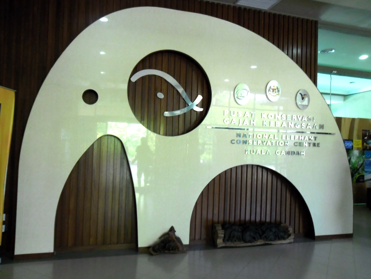 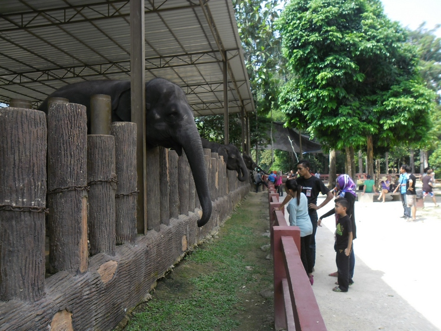 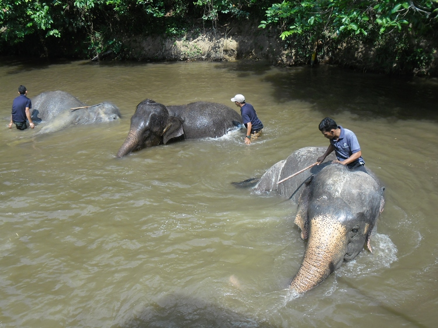 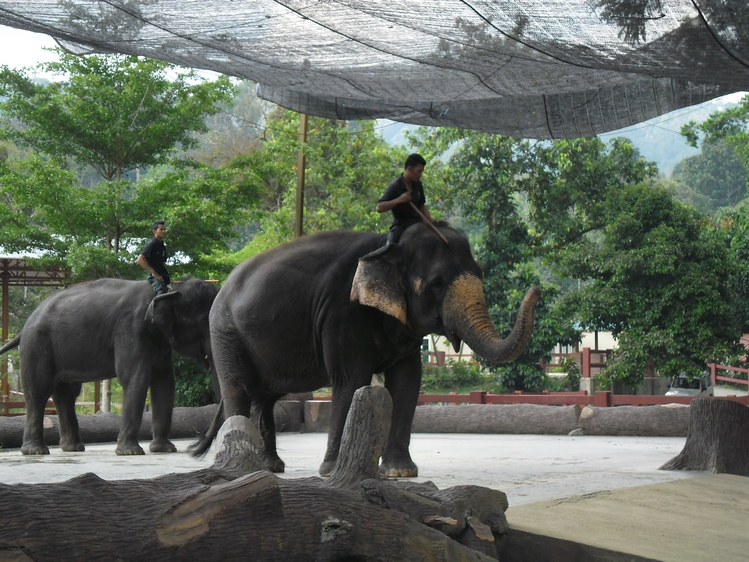

於位彭亨州瓜拉甘達的大象公園保育中心，以近距離接觸大象的絕佳場所。 遊客可以和大象一起洗澡。工作人員會教導您如何幫大象洗澡，與牠親密接觸。 據統計馬來西亞目前僅存 1200 餘頭野生亞洲象（學名 Elephus Maximus），而這座保育園也是全馬來西亞唯一一個專門用於安置流離失所野象的保護中心。 園中的大象來自馬來西亞半島的各個角落，經過救助後安全地生活在這個叢林保護區中。
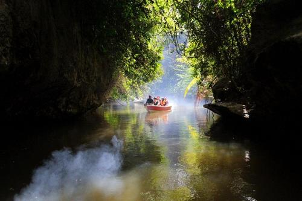 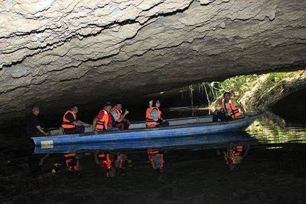
 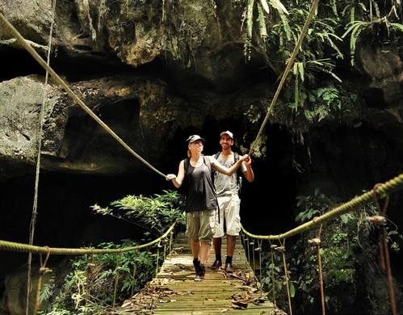
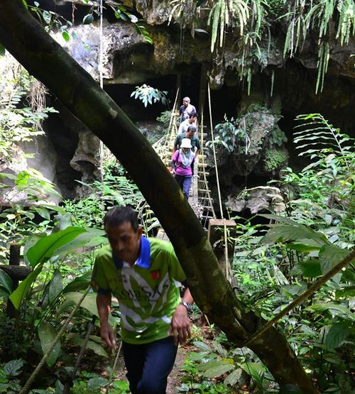
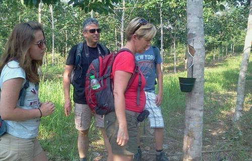
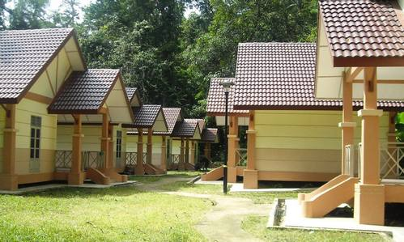
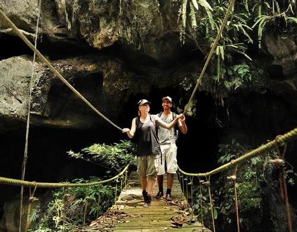
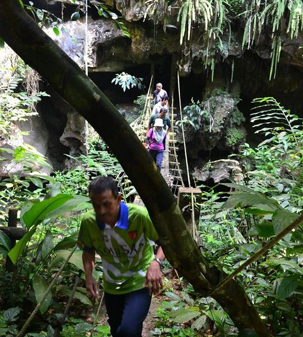
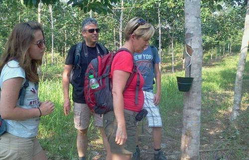
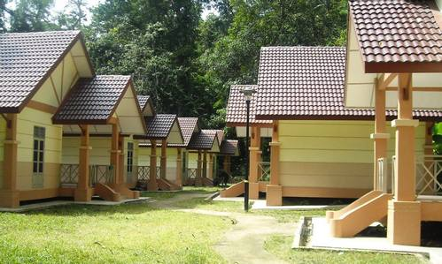
位於彭享州的肯濃森林公園佔地 121 平方公里，地處肯濃谷（Kenong Valley），位於國家公園西南方。公園內有著壯麗的的石灰岩洞穴。 森林中除了鳥兒偶爾的唧啾聲和瀑布嘩嘩的輕響，幾乎安靜得令人屏息。 步行約半小時，便可從一處洞穴到達另外一處。其中最奇特的Gua Batu Tinggi 洞穴，就像地面上刻出了一艘巨型船的身形。Sungai Kenong河從中蜿蜒流過。 民間傳說曾有一艘國王的大船，從北根經過此處，但不知為何化作岩石，於是形成了今日的洞穴。 這座洞穴高出海平面約 122－152 公尺。在這裡您會看到多樣化又豐富的植物，有蘭草、無花果、寄生植物，數不勝數。